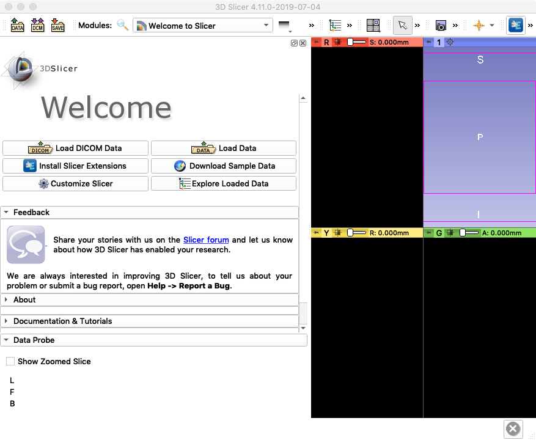
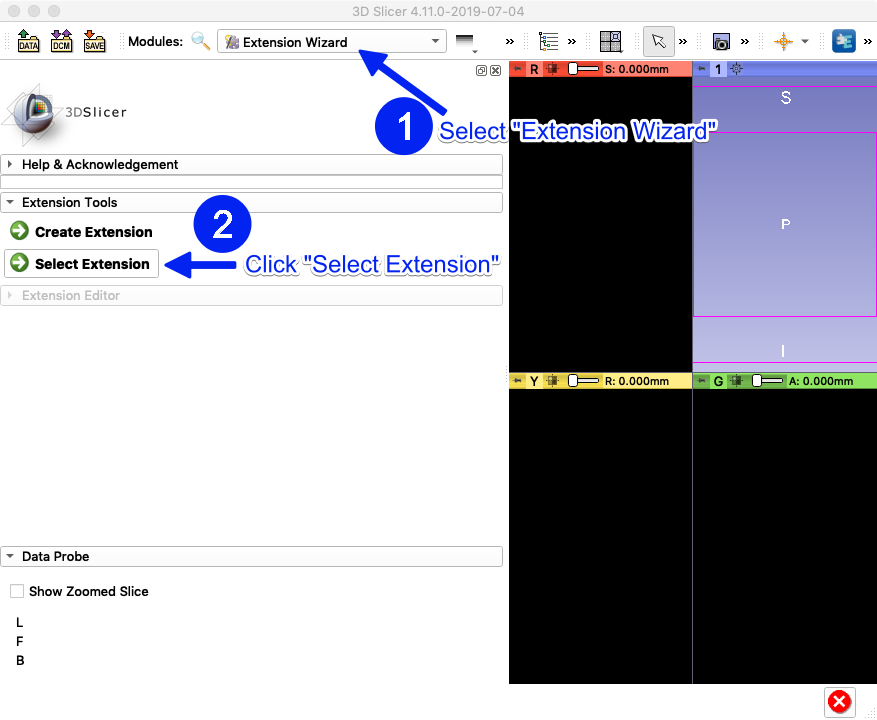
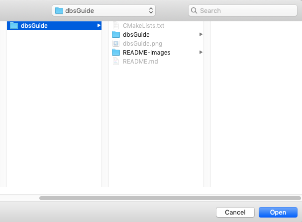
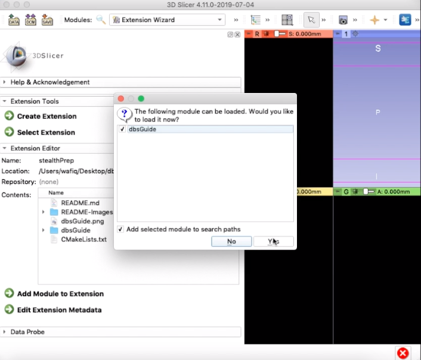
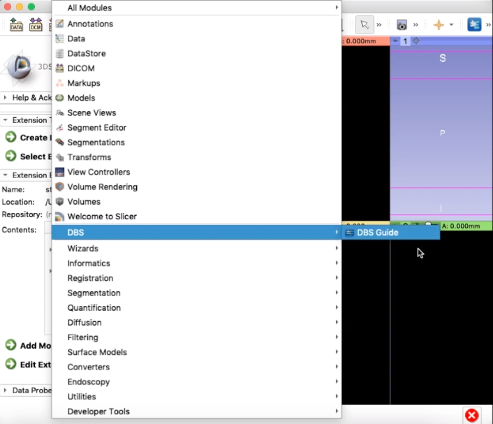

Installation¶
Requirements¶
- 3D Slicer
3D Slicer (Version 4.11.0 or later), Download here: https://download.slicer.org/
- DBS Guide Python Module
Download the latest version of DBS Guide.
Unzip the folder and save it somewhere on your system. For this tutorial, the file has been saved in Desktop.
Loading DBS Guide into Slicer¶
Steps Overview
Modules Drop Down Menu (Found in top menu bar)
Developer Tools -> Extension Wizard
Select Extension -> Open DBS Guide-master folder
1. Open Slicer¶
It should look like this (if you have/don’t have a Python Interactor at the bottom, that is fine)

2. Load DBS Module¶
On the top menu bar next to “Modules”, select the drop down menu and go to “Developer Tools”, then select “Extension Wizard.” Under Extension Tools, press “Select Extension.”
Select the DBS Guide-master folder and open it

3. Pop-up Window¶
A window will pop up. Make sure both options are selected and press yes.
The DBS Guide module is now apart of Slicer.
4. Open DBS Guide in Slicer¶
To open it, go to the modules drop down menu and select DBS -> DBS Guide
You have now successfully loaded DBS Guide into Slicer. Your screen should look like this:

5. Reopening Slicer/DBS Guide¶
The next time you open Slicer, you don’t have to go through the Extension Wizard. DBS Guide will be included in Slicer’s modules. You may open DBS Guide straight from the Modules drop down menu (all you have to do is step 4 next time)